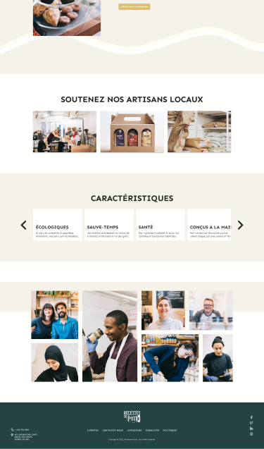
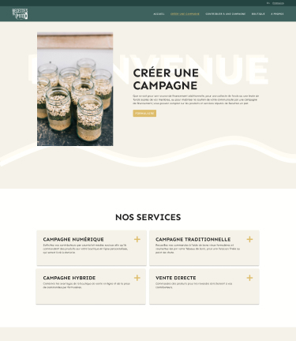
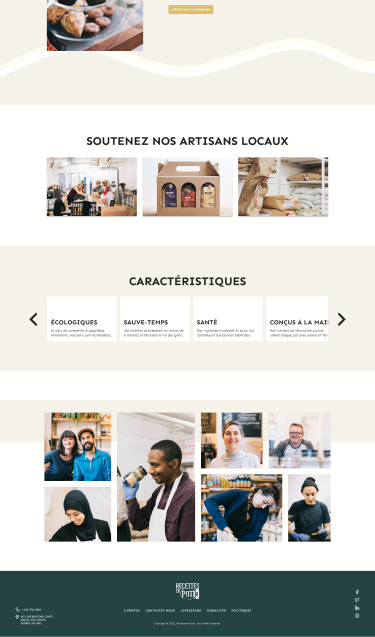
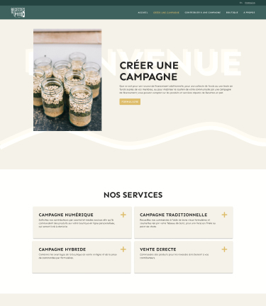

Design et intégration web d’un site déjà existant. Le site contient les composantes du scrolly, d’un carrousel, d’une fenêtre modale et d’un formulaire. J’ai réalisé le design du site web sur le logiciel Figma, pour ensuite le convertir en HTML et CSS à l’aide de VSCode.